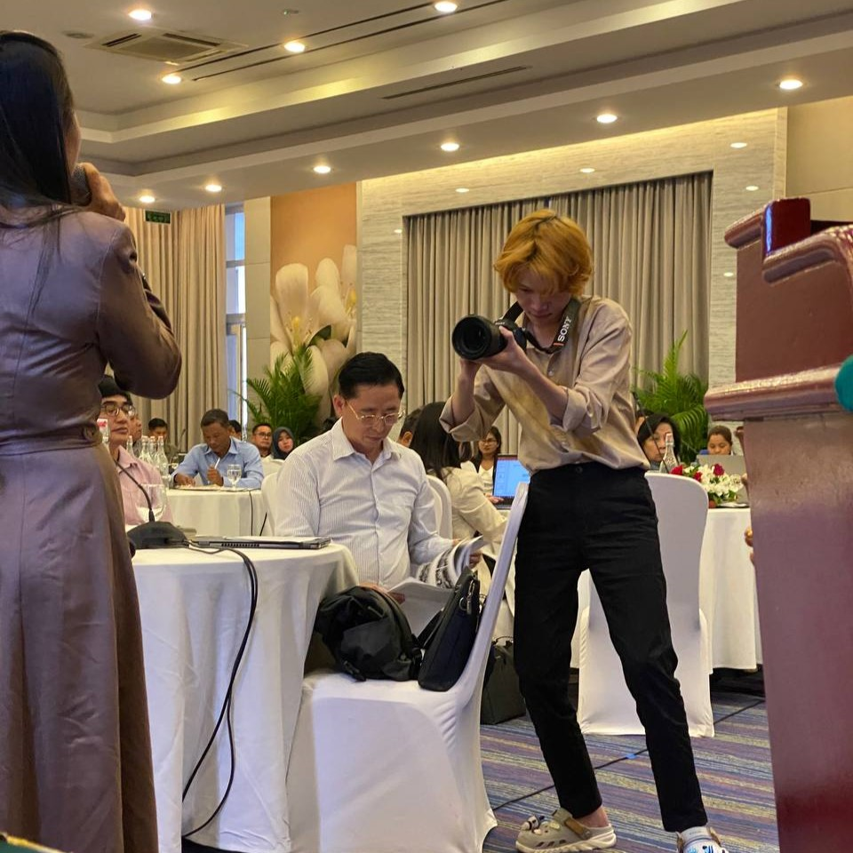

üé• My Experience as a Media Assistant: Designing with Purpose, Learning with Passion
During my time as a Media Assistant, I had the opportunity to take on a variety of creative and technical tasks that challenged and strengthened my skills. My main responsibilities included designing IEC (Information, Education, Communication) materials for public awareness campaigns and upcoming events, as well as maintaining our organization’s public pages to reach broader target audiences through eye-catching posters and short-form videos. Along the way, I also supported multiple program staff across departments — even when it wasn’t officially part of my job.
üß∞ Tools and Platforms I Worked With
One of the unique aspects of this role was the diverse range of platforms and tools I got to work with. I created and distributed content across Facebook, TikTok, and YouTube, ensuring the message fit each platform’s tone and audience.
To bring the visuals to life, I used:
üõ† Blender to model 3D products used in poster design
üé® Photoshop and Illustrator to design impactful IEC materials
üåÄ Live2D to turn posters into dynamic parallax animations
✂️ CapCut to edit videos and sync sound
üì± And even ibisPaint on mobile ‚Äî for emergency edits on the go
ü§ù Teamwork Moments
Although most of my work was done independently, I did get to collaborate with the media team during major events. For example, during a large campaign, we divided tasks — some handled photography, others filmed, and we worked together to prep livestream setups or meeting equipment. Even though we didn’t work side-by-side daily, these moments showed how dedicated everyone was when it really mattered.
üìà Proud Projects
Every design I created went public, and I’m proud of the impact they had. Some highlights include:
Posters that doubled the engagement I expected, thanks to strong messaging and striking visuals

IEC materials that were used across different regions to promote educational awareness

üìÖ Time Management Strategy
I’ll admit — I don’t like rushing before deadlines. That’s why I developed a system of preparing materials one to two months in advance. This allowed me to focus calmly, even when I had to travel for fieldwork, attend events, or take time off. If I finished early, I’d check in with other program staff to ask if there was anything I could help with — and often I’d get new review tasks that kept things moving forward.
üòÖ A Last-Minute Save
One moment I’ll never forget: right before a major event, someone noticed a large printed banner had the wrong logo. We didn’t have a laptop on hand — only cameras and phones. So I quickly used my phone and the ibisPaint app to fix the error on the spot. It wasn’t glamorous, but it worked, and the event went on without a hitch!
üí° What I Learned
This role taught me how to think like a brand, not just a designer. I learned how to combine creativity with consistency, manage deadlines under pressure, and handle feedback constructively. Most of all, it helped me grow confident in working independently while still contributing as part of a bigger media team.
